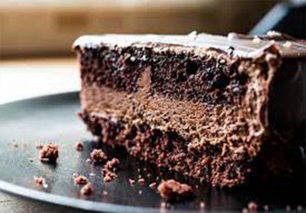

Texas Sheet Cake

Description
This Texas Sheet Cake is a incridible dessert for all sorts of party. A dense chocolate cake topped with a fudgy
pourable icing, this recipe will satisfy any sweeth tooth.
Ingredients
Cake:
- 2 Cups all-purpose flour
- 2 Cups white sugar
- 1 Teaspoon baking soda
- 1/2 Teaspoon salt
- 1/2 Cup sour cream
- 2 Eggs
- 1 Cup butter
- 1 Cup water
- 5 Tablespoons unsweetened cocoa powder
Icing:
- 6 Tablespoons milk
- 5 Tablespoons unsweetened cocoa powder
- 4 Cups confectioners' sugar
- 1 Teaspoon vanilla extract
- 1/2 Cup butter
- 1 Cup chopped walnuts (optional)
Steps
- Preheat the oven to 350 degrees F (175 degrees C). Grease and flour a 10x15-inch jelly roll pan.
- Make cake: Combine flour, sugar, baking soda, and salt in a mixing bowl. Beat in sour cream and eggs.
- Melt butter in a saucepan over low heat. Stir in water and cocoa powder. Bring mixture to a boil then
remove from the heat. Allow to cool slightly, then stir cocoa mixture into the flour and egg mixture until
blended. Pour batter into the prepared pan.
- Bake in the preheated oven until a toothpick inserted into the center comes out clean, about 20 minutes.
- While the cake is baking, make icing: Combine milk, cocoa powder, and butter in a large saucepan over
medium heat. Bring to a boil, then remove from heat. Stir in confectioners' sugar and vanilla, then fold
in walnuts, mixing until blended.
- Spred icing over warm cake.
Home Page